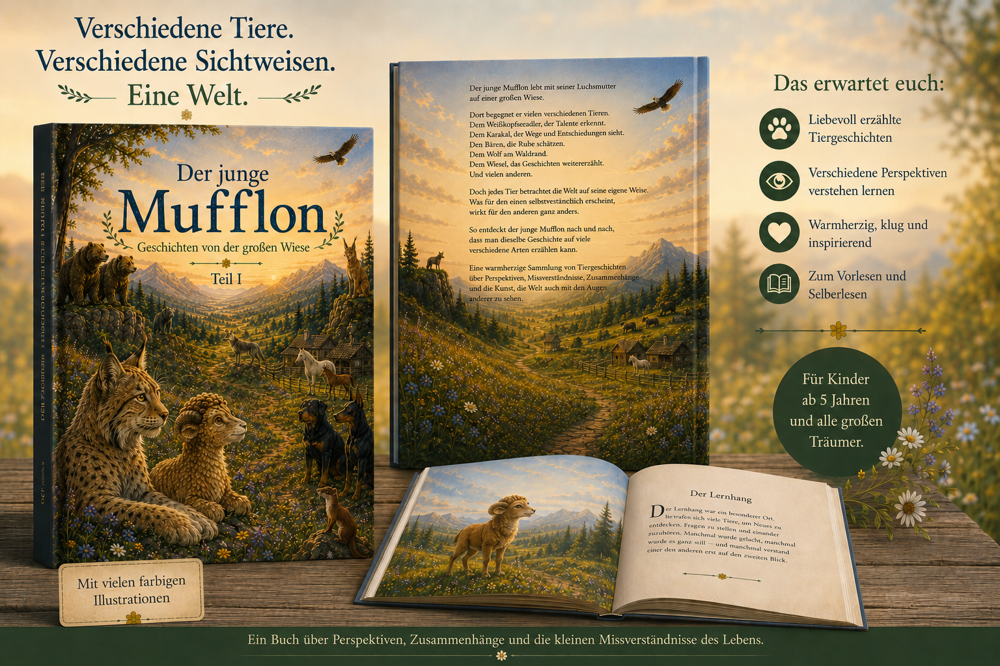
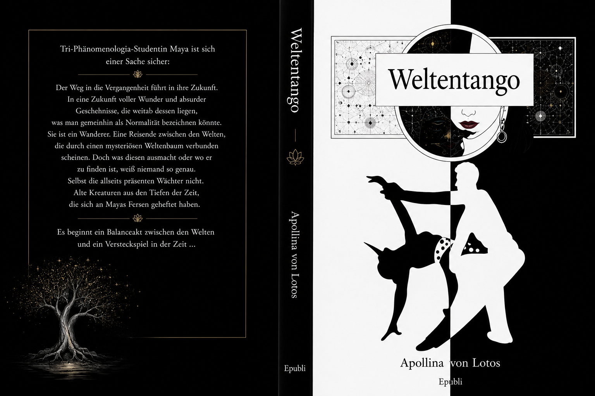

Kinderbuch
Der junge Mufflon
Ein warmherziges Buch über verschiedene Sichtweisen, kleine Missverständnisse und die Frage, wie unterschiedlich Lebewesen die Welt betrachten können.
Light up Reader
Ein wachsender Leseraum für eigene Veröffentlichungen, vertiefende Materialien und Weiterreisen zu verwandten Projekten.
Eigene Veröffentlichungen
Die Bücher sind keine getrennte Shopwelt, sondern Erweiterungen des Denkraums: Geschichten, Essays und literarische Wege, die einzelne Themen von Light up Reader weiterführen.

Kinderbuch
Ein warmherziges Buch über verschiedene Sichtweisen, kleine Missverständnisse und die Frage, wie unterschiedlich Lebewesen die Welt betrachten können.
Buch
Ein weiterführender Leseraum über Resonanz, Vergänglichkeit und die unsichtbaren Rhythmen des Lebens.

Roman
Die ursprüngliche Version des Romans von 2022: ein literarischer Bewegungsraum zwischen Welt, Wahrnehmung, Tanz und innerer Suche.
Essays & Arbeitsmaterialien
Dieser Bereich bleibt bewusst offen. Hier können später PDFs, Arbeitsblätter, Karten, Bildersammlungen, Unterrichtsmaterial oder kleine Essayhefte ergänzt werden, ohne die Bibliothek neu zu strukturieren.
Vertiefende Texte als kompakte Downloads.
Materialien für Schule, Denken, Schreiben und Beobachten.
Infografiken, Poster und visuelle Denkwege.
Empfehlungen
Nicht alles gehört in denselben Raum. Manche Wege führen zu verwandten Projekten, Blogs oder Unterstützungsorten.